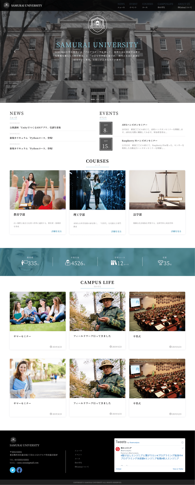
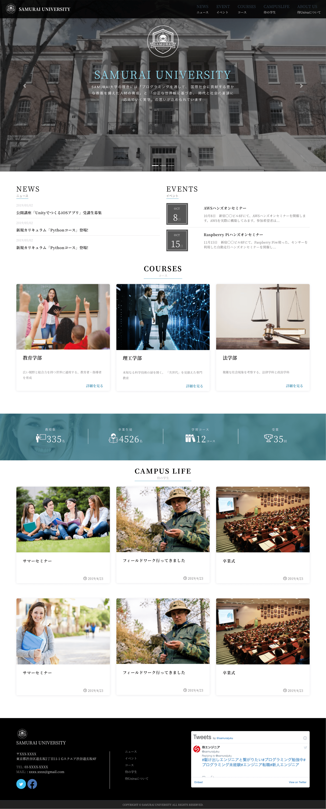

大学のHPをイメージしたサンプルサイトです。
URL
https://y-tsuru.com/sample/university-website/
制作内容
デザイン・コーディング
サイトの目的
大学の紹介
使用技術
WordPress/PHP
デザインについて
同じようなデザインで学校機関や企業様のHPを作成することが可能です。
コーディングについて
ブログのようにコンテンツを投稿できる機能を取り揃えています。またTwitterのフィードをサイト上に表示させることも可能です。

大学のHPをイメージしたサンプルサイトです。
https://y-tsuru.com/sample/university-website/
デザイン・コーディング
大学の紹介
WordPress/PHP
同じようなデザインで学校機関や企業様のHPを作成することが可能です。
ブログのようにコンテンツを投稿できる機能を取り揃えています。またTwitterのフィードをサイト上に表示させることも可能です。